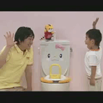

<a name="top" id="top"></a>
<br />
<br />


<table width="90%" cellpadding="0" cellspacing="0" align="center">
<tr>

<td align="center">
ﾄｲﾚで<br />おしっこできるかな?<br />
</td>
</tr>
<tr>
<td align="center">
<br />
<br />

</td>
</tr>
<tr>    
<td align="left"><span style="font-size:x-small;color:#333333">
同年代の子がﾄｲﾚでおしっこに挑戦する動画です｡6月号映像教材と連動しています｡実際にﾄｲﾚに座っておしっこするｲﾒｰｼﾞを具体的にｲﾝﾌﾟｯﾄできます｡<br /><br />
■使い方<br />
ﾀﾞｳﾝﾛｰﾄﾞしてお使いください｡<br />
<span style="color:#666666">※音声つきです｡ﾏﾅｰﾓｰﾄﾞを解除してお使いください｡</span><br /><br />
</span></td>
</tr>

<tr>
<td align="center">
<object data="src/petit_1104_16_au.3g2" type="video/3gpp2" copyright="no" standby="ﾀﾞｳﾝﾛｰﾄﾞ">
<param name="disposition" value="devmpzz" valuetype="data" />
<param name="size" value="594892" valuetype="data" />
<param name="title" value="みんなでﾄｲﾚ ねずみ" valuetype="data" />
</object><span style="font-size:small">(約28秒)</span>
</td>
</tr>

</table>
